Lecture1: Python脑电信号预处理实践
一、Python环境搭建
Anaconda
Anaconda是一个集成了Python、环境管理工具和科学计算包的发行版。它提供了Conda包管理器，便于安装和管理库；它支持多环境隔离，避免项目冲突。
Miniconda：Anaconda的轻量级替代，仅包含Python和Conda。
Conda基本命令
-
常用命令：
- 查看Conda版本：
conda -v - 列出已有环境：
conda env list - 创建新环境：
conda create -n [环境名称] python=[版本号] - 激活环境：
conda activate [环境名称] - 退出环境：
conda deactivate - 删除环境：
conda remove --name [环境名称] --all
- 查看Conda版本：
-
导出/导入环境：
- 导出：
conda env export --name [环境名称] > env.yml - 导入：
conda env create -f env.yml
- 导出：
包管理
-
Conda包管理：
- 列出已安装包：
conda list - 安装包：
conda install [包名称]（可选：=版本号） - 更新包：
conda update [包名称] - 删除包：
conda uninstall [包名称]
- 列出已安装包：
-
Pip包管理：
- 列出已安装包：
pip list - 安装包：
pip install [包名称]（可选：==版本号） - 更新包：
pip install --upgrade [包名称] - 删除包：
pip uninstall [包名称]
- 列出已安装包：
-
导出/导入Pip环境：
- 导出：
pip freeze > requirements.txt - 导入：
pip install -r requirements.txt
- 导出：
事实上，在激活某一环境后，用conda和pip下载的包差距不大，前者的包对于版本转换等问题适配更好，而后者涉及更多新包的资源。
三、一些可以用到的算法库
本次实验会用到以下第三方库，需提前安装：
- numpy
- pandas
- matplotlib
- scipy
- mne
- mne_icalabel
这里对课上的一些语法做了补充，它属于基础部分，略过即可。
3.1 Numpy
-
用途：NumPy广泛用于科学计算和数据处理。
-
核心功能：
-
创建数组：
使用
np.array()创建一维或多维数组，支持多种数据类型。 -
数组切片：
支持灵活的索引和切片操作，访问数组的子集。
-
广播机制：
允许对数组进行元素级运算，无需显式循环。
-
数组操作：
-
统计计算：
np.mean(),np.sum()等。 -
重排数组：
arr.shape返回数组维度。
-
-
生成特殊数组：
np.zeros(shape)：全零数组。np.ones(shape)：全一数组。-
np.arange(start, stop, step)：生成等差序列。
-
3.2 Matplotlib
Matplotlib 是Python最常用的数据可视化库
- 可以生成折线图、柱状图、散点图、饼图、直方图等各种图形
- 常配合 NumPy 和 Pandas 使用，用于分析结果展示与图表绘制
import matplotlib.pyplot as plt
plt.plot(np.arange(0, 2, 0.004), array[0, 0, :], label='0')
plt.plot(np.arange(0, 2, 0.004), array[0, 1, :], label='1')
plt.legend()
plt.show()
不多赘述，大物实验报告没少用。
3.3 Pandas
Pandas 是 Python 中专门用于数据处理与分析的强大库，提供了两种核心数据结构：
- eries：一维标签数组（类似一列）
- DataFrame：二维表格型数据（类似Excel或数据库表）
很多表格等结构化数据就用到了这个。
- 用途：适合处理表格数据、数据清洗和分析。
-
核心功能：
-
创建DataFrame和Series：
从字典、CSV 文件等创建表格数据。
# Series(一维) s = pd.Series([10, 20, 30], index=["a", "b", "c"]) print(s["b"]) # DataFrame(二维) data = { "name": ["Alice", "Bob", "Charlie"], "age": [25, 30, 22] } df = pd.DataFrame(data) print(df)输出结果：
-
读取数据：
支持多种格式，如 CSV、Excel 等。
输出结果：
-
数据过滤：
使用条件筛选数据。
-
数据清洗：
处理缺失值或重复值。
-
统计分析：
计算描述性统计信息，如均值、标准差等。
-
保存为CSV文件：
-
四、EEG预处理技术
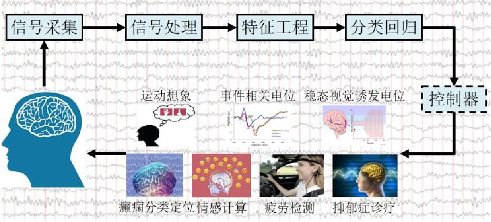
4.1 EEG简介
- EEG：记录大脑皮层电活动。
- EEG数据格式：EEG数据有多种文件格式，包括fif、edf和cnt三种格式。
-
EEG数据内容：
- 元数据：通道数量、通道名称、通道类型、坏通道、采样频率、高通滤波、低通滤波等信息。
- 脑电数据：一个二维数组，形状为(通道数, 采样点数)
必须注意的是，实际的实验中存在各种干扰，这会致波形受到影响，以下是一些常见的因素：
干扰因素
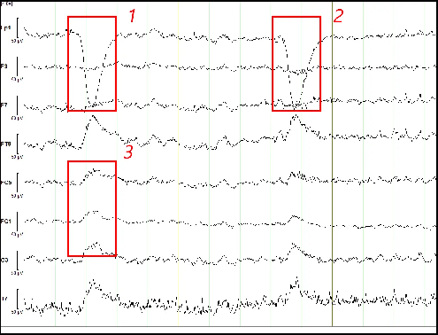
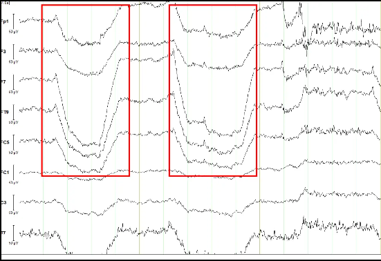
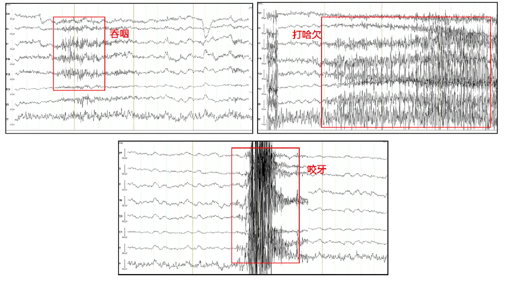
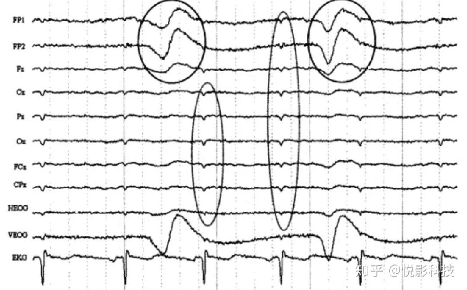
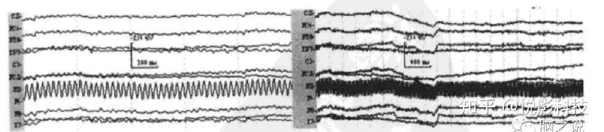
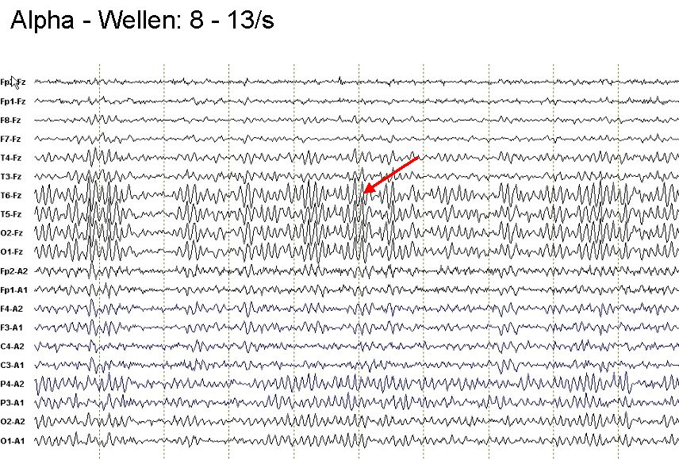
4.2 EEG预处理流程
- 导入数据
- 加载电极
- 滤波
- 分段
- 重采样
- 插值坏导
- 剔除坏段
1. 导入数据
EEG文件需用特定函数加载。
| 格式 | 函数 |
|---|---|
| fif | mne.io.read_raw_fif |
| edf | mne.io.read_raw_edf |
| cnt | mne.io.read_raw_cnt |
读取.edf文件
# 用 mne.io.read_raw_edf 读取 MDD S19 EO.edf
raw = mne.io.read_raw_edf('MDD S19 EO.edf', preload=True)
# 输出信息（<Info ... >）
print(raw.info)
# 输出形状（(20, 76288)）
print(raw.get_data().shape)
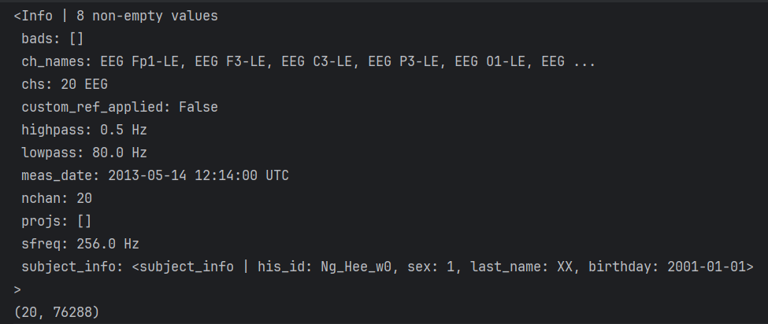
2. 加载电极
- 根据通道名称设置通道类型
- 根据通道类型筛选通道
- 通道重命名
- 设置电极布局
加载电极
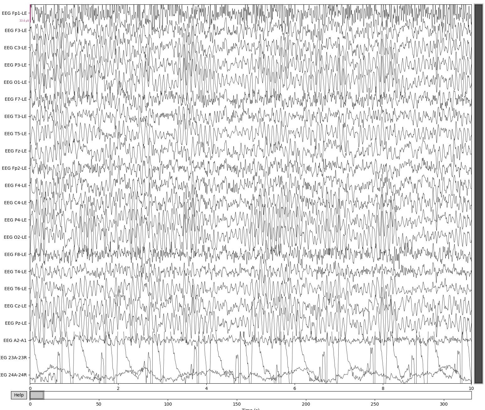
在这个图里面，A2-A1、23A-23R、24A-24R不是需要的通道，所以需要删除。
# 需要删除的通道
not_channels = ['EEG A2-A1','EEG 23A-23R', 'EEG 24A-24R']
map = {
"EEG Fp1-LE": "Fp1",
"EEG F3-LE": "F3",
"EEG C3-LE": "C3",
"EEG P3-LE": "P3",
"EEG O1-LE": "O1",
"EEG F7-LE": "F7",
"EEG T3-LE": "T3",
"EEG T5-LE": "T5",
"EEG Fz-LE": "Fz",
"EEG Fp2-LE": "Fp2",
"EEG F4-LE": "F4",
"EEG C4-LE": "C4",
"EEG P4-LE": "P4",
"EEG O2-LE": "O2",
"EEG F8-LE": "F8",
"EEG T4-LE": "T4",
"EEG T6-LE": "T6",
"EEG Cz-LE": "Cz",
"EEG Pz-LE": "Pz",
}
# 丢弃不需要的
raw.drop_channels(not_channels)
# 用map字典重命名
raw.rename_channels(map)
# 设置电极布局
raw.set_montage('standard_1005')
raw.plot_sensors(show_names=True) # EEG通道可视化
这个就是raw.plot_sensors(show_names=True)得到的电极布局图：（从上方俯视脑袋，黑点就是贴的电极）
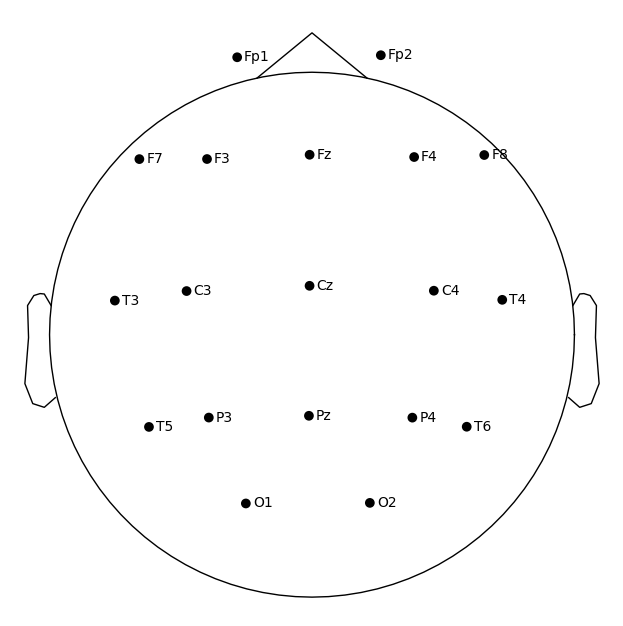
3. 滤波
分两类：
- 带通滤波：
raw.filter(x, y)，保留信号中x（低频截止频率）和y（高频截止频率）之间的特定频率范围。 - 陷波滤波：
raw.notch_filter(z)，去除信号中特定频率z。
4. 重采样
调整采样频率（降采样/升采样）：raw.resample(a)（降到 a Hz）。
5. 插值坏导和剔除坏段
有一部分因为损坏等原因，需要我们基于周围正常通道的空间信息，通过插值方法重建被标记为"坏"的通道数据。
插值坏导
在刚才的示例中，其实我们可以发现Fz这个通道与周围的波形格格不入，可以大致推测它是坏值，因此我们把它加入bad_channels，然后用raw.info['bads']去标注坏值。
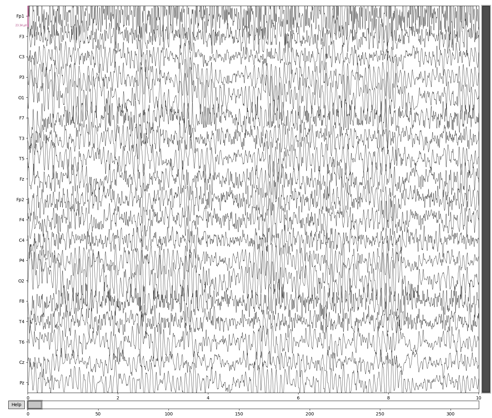
处理时我们剔除坏值和滤波都要做，但一般来说顺序不重要
6. 重参考
- 共平均参考：
raw.set_eeg_reference('average', projection=True) - 双侧乳突参考：指定左右乳突电极
M1和M2，使用raw.set_eeg_reference(['M1', 'M2']) - REST重参考
7. 独立成分分析
它主要用于之前提到的分离混合信号中的独立源成分，除去眼动等伪迹，提高信号质量。
ICA假设这些信号是线性混合的独立源，通过统计方法（如最大化非高斯性）将混合信号分解为独立成分。分解后，我们可以手动或自动（通过mne_icalabel）标记哪些成分是伪迹并移除。
独立成分分析
方才例子中的EEG信号包含伪迹。我们用ICA将这些混合信号分解为独立的成分（independent components, ICs），便于识别和去除伪迹；不过我们也要通过识别与大脑活动相关的成分，保留这些信号。
raw_ica = raw.copy() # 创建raw的副本，这里主要保证不动原始数据
n_components = 15 # 设置 ICA 分解的独立成分数量
ica = ICA(n_components=n_components, method='infomax', fit_params=dict(extended=True), random_state=42)
ica.fit(raw_ica) # 对 EEG 数据执行 ICA 分解
# 创建MNE的 ICA 对象，配置ICA参数
ic_labels = label_components(raw_ica, ica, method='iclabel')
labels = ic_labels["labels"] # 提取成分标签
probs = ic_labels["y_pred_proba"] # 提取标签的置信度
iclabel_dict = {
'labels': labels,
'probs': probs,
}
# 筛选出需要移除的“坏”成分（伪迹），存储其索引到 bad 列表
# 逻辑：使用列表推导式，遍历 labels 和 probs，排除“brain”或“other”的成分，仅选择置信度 ≥ 0.7 的成分
bad = [i for i, (label, prob) in enumerate(zip(labels, probs)) if label not in ['brain', 'other'] and prob >= 0.7]
ica.exclude = bad
ica.apply(ica, exclude=ica.exclude) # 应用 ICA，移除伪迹成分
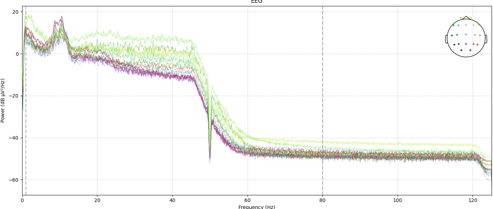
五、脑电信号预处理实践数据集
5.1 数据集
- 来源：MDD抑郁症公开数据集（EDF格式）
- 链接：EEG_Data_New
5.2 注意事项
-
EDF文件需用
mne.io.read_raw_edf()方法读取。 -
清理通道名称（还有删除
A2-A1、23A-23R、24A-24R）。 -
使用共平均参考：
raw.set_eeg_reference(ref_channels="average")。